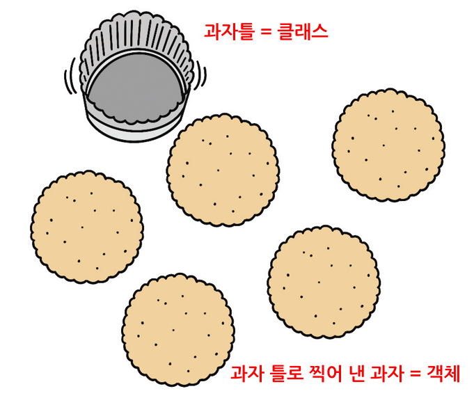
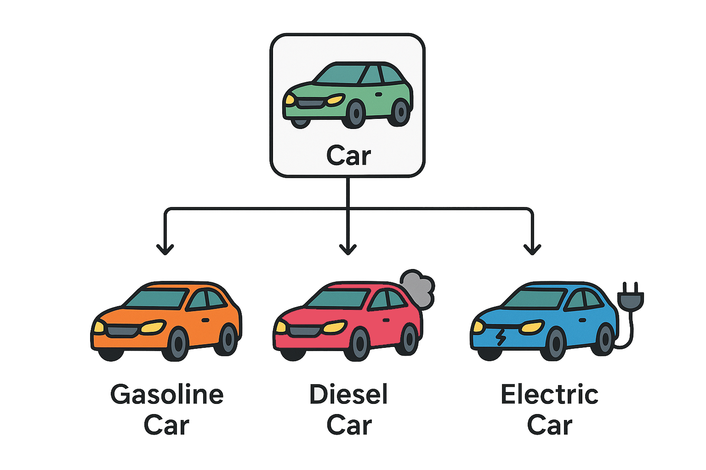

## 클래스 정의1 : 은행계좌
# 잔액의 초기값은 항상 0으로 설정
class Account:
# 생성자 메소드
def __init__(self): # 첫 번째 매개변수는 반드시 self여야 함
self.balance = 0 # (속성) 잔액, 인스턴스마다 독립적
# (메소드) 입금
def deposit(self, amount): # 첫 번째 매개변수는 반드시 self여야 함
self.balance += amount # 인스턴스 변수에 접근하기 위해 self.balance 사용
return self.balance
# (메소드) 출금
def withdraw(self, amount):
self.balance -= amount
return self.balance5. 클래스
5.1. 클래스와 객체
- 객체지향 프로그래밍(Object-Oriented Programming; OOP)
- 프로그램을 여러 개의 독립된 단위(객체)들의 모임으로 구성하는 프로그래밍 패러다임
- 현실 세계에 존재하는 모든 것을 객체로 표현 → 프로그램이 더 직관적이고 이해하기 쉬워짐
- 코드의 재사용성, 유지보수성, 확장성이 높아짐
- 객체(object)
- 현실 세계의 사물이나 개념을 코드로 구현한 것
- 데이터를 저장하는 속성(attribute)과 기능을 수행하는 메소드(method)를 가짐
- (예) 은행계좌
- 속성 : 잔액
- 메소드 : 입금, 출금
- 클래스(class)
- 객체를 생성하기 위한 일종의 설계도(template)
- 공통된 속성(attribute)과 메소드(method)를 가지는 객체들을 하나의 구조로 정의
- 같은 클래스에서 만들어진 객체들은 구조와 동작 방식이 동일함
- 클래스로부터 만들어지는 객체를 그 클래스의 인스턴스(instance)라 함
- (예)
Account클래스 → 여러 개의 은행계좌 객체를 생성할 수 있음

5.2. 클래스 정의와 인스턴스 구성
- 클래스 정의
class키워드를 사용하여 정의함- 클래스 이름은 일반적으로 대문자로 시작(예 :
Account,Student) - 클래스 본문에는 속성(변수)와 메소드(함수)를 정의함
- 생성자 메소드
__init__()- 인스턴스가 생성될 때 자동으로 호출되는 특별한 메소드
- 인스턴스마다 고유한 속성(인스턴스 변수)을 초기화하는 데 주로 사용됨
- 인스턴스 변수는
__init__()내부에서self.변수 이름형태로 정의되어 각 인스턴스마다 독립적인 값을 가짐 - 첫 번째 매개변수는 항상
self로, 생성된 인스턴스 자신을 가리킴
| 구분 | 설명 |
|---|---|
| 인스턴스 변수 | - 메소드 내부에서 self.변수이름 형태로 정의 - 인스턴스마다 독립적인 값을 가짐 |
| 인스턴스 메소드 | - 클래스 내부에 정의된 함수 - 첫 번째 매개변수로 self를 사용하여 해당 인스턴스에 접근함 - 인스턴스를 통해 호출됨 |
# 인스턴스 생성
my_acc = Account()# 인스턴스 속성 확인 : 잔액
print(my_acc.balance)0# 인스턴스 메소드 사용1 : 입금
print(my_acc.deposit(10000))10000# 인스턴스 메소드 사용2 : 출금
print(my_acc.withdraw(3000))7000# 인스턴스 속성 확인 : 잔액
print(my_acc.balance)7000## 클래스 정의2 : 은행계좌
# 잔액의 초기값을 인스턴스를 생성할 때 직접 입력받아 설정(입력히지 않으면 0)
class Account:
# 생성자 메소드
def __init__(self, amount=0):
self.balance = amount # (속성) 잔액
def deposit(self, amount): # (메소드) 입금
self.balance += amount
return self.balance
def withdraw(self, amount): # (메소드) 출금
self.balance -= amount
return self.balance# 인스턴스 생성 및 속성 확인
my_acc = Account(50000)
print(my_acc.balance)500005.3. 매직 메소드
5.3.1. 매직 메소드 소개
- 매직 메소드(magic method)
- 이름 앞뒤에
___(double underscore)가 붙는 특별한 메소드 - Python 내부 동작과 자동으로 연결되며, 다양한 상황에서 자동 호출됨
- (예)
print(인스턴스)→__str__()호출 - (예)
for x in 인스턴스→__iter__()호출
- (예)
- 오버라이드하면 내가 정의한 클래스가 Python 기본 동작과 자연스럽게 연동됨
- 클래스 사용성과 직관성을 크게 향상시킴
- 이름 앞뒤에
5.3.2. 문자열 표현 메소드
__str__()메소드- 인스턴스를
print()하거나str()로 변환할 때 자동으로 호출되는 메소드 - 인스턴스의 상태를 사람이 읽기 쉬운 문자열 형태로 반환함
- 디버깅이나 결과 출력 시 인스턴스 정보를 명확히 확인할 수 있도록 도와줌
- 인스턴스를
__repr__()메소드- 인스턴스를 대화형 환경에서 출력하거나
repr()로 변환할 때 자동으로 호출되는 메소드 - 인스턴스의 상태를 개발자가 이해하기 쉽고, 가능하면 인스턴스 재생성이 가능한 정확한 문자열 형태로 반환함
repr()함수 : 인스턴스의 표준 문자열 표현을 반환하며,eval()함수에 전달 시 일반적으로 원래 인스턴스가 생성됨- 일반적으로
eval(repr(obj)) == obj이 성립하도록 설계함
- 주로 디버깅, 로깅, 인스턴스 재생성 코드 출력 등에 유용하게 사용됨
__str__()메소드가 정의되지 않은 경우__repr__()의 반환값이 대신 사용됨(반대는 성립 ×)
- 인스턴스를 대화형 환경에서 출력하거나
## 클래스 정의 : 책
class Book:
def __init__(self, title, author, price):
self.title = title # (속성) 책 제목
self.author = author # (속성) 저자 이름
self.price = price # (속성) 가격
# 가격 할인 적용 후 price 값 변경(소수점 이하 버림)
def apply_discount(self, percent): # (메소드) 가격 할인 적용 (percent : 0~100)
self.price = int(self.price * (1 - percent / 100))
# 사람이 읽기 좋은 문자열 표현
def __str__(self):
return f"Book(title: '{self.title}', author: '{self.author}', price: {self.price}원)"
# 개발자용 문자열 표현
def __repr__(self):
return f"Book('{self.title}', '{self.author}', {self.price})"# 인스턴스 생성
my_book = Book("Python Programming", "Park", 30000)# 인스턴스를 문자열로 출력1 : __str__() 메소드 자동 호출
print(my_book)Book(title: 'Python Programming', author: 'Park', price: 30000원)# 인스턴스를 문자열로 출력2 : __repr__() 메소드 자동 호출
my_bookBook('Python Programming', 'Park', 30000)# 인스턴스를 문자열로 출력3 : __repr__() 메소드 자동 호출
repr(my_book)"Book('Python Programming', 'Park', 30000)"# eval() 함수로 repr() 결과를 실행하여 새로운 인스턴스 생성
my_book.apply_discount(10)
new_book = eval(repr(my_book))
print(new_book)Book(title: 'Python Programming', author: 'Park', price: 27000원)5.3.3. 시퀀스 동작 메소드
- 리스트, 튜플처럼 순서가 존재하는 자료형(sequence data type)에서 동작하는 매직 메소드
- 사용자 정의 클래스에 시퀀스 특성을 부여하며,
len(), 인덱싱, 반복문 등과 자연스럽게 연동됨
| 유형 | 설명 |
|---|---|
| __len__() 메소드 | - 인스턴스를 len()로 변환할 때 자동으로 호출되는 메소드 - 인스턴스가 포함하고 있는 원소의 개수를 정수형으로 반환함 |
| __getitem__() 메소드 | - 인스턴스를 인덱싱(인스턴스[index])할 때 자동으로 호출되는 메소드 - 특정 위치의 값을 반환하며, 슬라이싱 처리도 가능하게 만들 수 있음 |
| __iter__() 메소드 | - for 문에서 사용할 수 있는 iterable 객체를 반환하는 메소드 - 일반적으로 return iter(내부_시퀀스) 형태로 구현함 |
## 클래스 정의 : 음악 플레이리스트
class Playlist:
def __init__(self, name, songs):
self.name = name # (속성) 플레이리스트 이름
self.songs = songs # (속성) 노래 목록 (리스트)
def add_song(self, song): # (메소드) 노래 추가
self.songs.append(song)
def __str__(self):
return f"Playlist '{self.name}' with {len(self)} songs"
def __repr__(self):
return f"Playlist('{self.name}', {self.songs})"
# 포함된 원소의 개수 반환
def __len__(self):
return len(self.songs)
# 특정 위치의 원소를 반환 (인덱싱 가능)
def __getitem__(self, index):
return self.songs[index]
# iterable 객체 반환 (for 문 등에서 사용 가능)
def __iter__(self):
return iter(self.songs)# 인스턴스 생성
my_playlist = Playlist("My Favorites", ["Hype Boy", "APT.", "Mantra"])# 원소의 개수 : __len__() 메소드 자동 호출
len(my_playlist)3# 인덱싱 : __getitem__() 메소드 자동 호출
my_playlist[1]'APT.'# for 문에서 iterable 객체 사용 : __iter__() 메소드 자동 호출
for song in my_playlist:
print(song)Hype Boy
APT.
Mantra# 인스턴스 메소드 사용 : 노래 추가
my_playlist.add_song("Ditto")
my_playlistPlaylist('My Favorites', ['Hype Boy', 'APT.', 'Mantra', 'Ditto'])5.3.4. 호출 동작 메소드
__call__()메소드- 인스턴스를 함수처럼 호출할 때 자동으로 실행되는 메소드
인스턴스()형태로 호출되며, 내부에서 필요한 로직을 자유롭게 구현 가능- 사용자 정의 클래스에 유연하고 직관적인 기능을 부여할 때 유용함
- (예) 파라미터를 받아 계산 수행, 누적 처리, 조건 평가 등
## 함수 정의1 : 누적 처리
def add_count(count, step=1):
count += step
return count
# 누적값은 함수 외부에서 직접 관리해야 함
# → 함수는 상태를 기억하지 않으므로, 매번 결과를 외부 변수에 저장해야 함
c = 0
c = add_count(c) # 1
c = add_count(c, 2) # 3
c = add_count(c) # 4
print(c)4## 클래스 정의1 : 누적 처리
# 클래스는 인스턴스 변수를 통해 상태(state)를 내부에 저장함
# → 상태를 직접 조작하지 않아도 내부에서 자동으로 관리됨
# 인스턴스마다 독립적인 값을 유지하므로, 여러 개의 상태를 동시에 관리하기 편함
class Counter:
def __init__(self):
self.count = 0 # (속성) 현재값(누적값)
# 인스턴스를 함수처럼 호출 가능하게 함
def __call__(self, step=1):
self.count += step
return self.count# 인스턴스 생성
c1 = Counter()
c2 = Counter()# 인스턴스를 함수처럼 호출1 : __call__() 메소드 자동 호출
c1()1# 인스턴스를 함수처럼 호출2 : __call__() 메소드 자동 호출
c1(5)6# 인스턴스를 함수처럼 호출3 : __call__() 메소드 자동 호출
# 인스턴스마다 독립적인 값 유지
c2()1## 클래스 정의2 : 조건 평가
# 클래스는 인스턴스 변수를 통해 상태(state)를 내부에 저장하고,
# 관련 기능을 하나의 객체에 통합하여 확장성과 재사용성을 높일 수 있음
class PassCounter:
def __init__(self, threshold):
self.threshold = threshold # (속성) 기준값
self.count = 0 # (속성) 조건 통과 횟수
def __call__(self, value):
# 값이 기준을 넘으면 count 누적
if value >= self.threshold:
self.count += 1
return True
return False
def reset(self): # (메소드) 조건 통과 횟수 초기화
self.count = 0# 기준값이 70인 인스턴스 생성
pc = PassCounter(70)# 인스턴스를 함수처럼 호출 : __call__() 메소드 자동 호출
pc(85) # True
pc(60) # False
pc(75) # True
pc.count2# 인스턴스 메소드 사용
pc.reset()
pc.count05.4. 클래스와 리스트
- 여러 개의 인스턴스를 관리하기 위해 리스트를 사용하면 효율적임
- 인덱스를 사용하여 특정 인스턴스에 접근 가능
- 반복문을 통해 리스트 내 모든 인스턴스에 접근하여 메소드를 호출하거나 속성을 조회할 수 있음
- 같은 클래스를 기반으로 다양한 인스턴스를 생성하고, 이를 리스트로 묶으면 프로그램 구조가 더 유연하고 확장 가능해짐
## 클래스 정의 : 은행계좌
class Account:
def __init__(self, account_number, owner, amount=0):
self.account_number = account_number # (속성) 계좌 번호
self.owner = owner # (속성) 계좌 소유주
self.balance = amount # (속성) 잔액
self.history = [] # (속성) 거래 내역
def deposit(self, amount): # (메소드) 입금
self.balance += amount
self.history.append(f"입금: {amount}")
return self.balance
def withdraw(self, amount): # (메소드) 출금
self.balance -= amount
self.history.append(f"출금: {amount}")
return self.balance
# 매직 메소드 ----------------------------------------
def __str__(self):
return f"현재 잔액은 {self.balance}원입니다."
def __repr__(self):
return f"Account(balance={self.balance})"
def __len__(self):
return len(self.history) # 거래 횟수 확인
def __getitem__(self, index):
return self.history[index] # 인덱스 활용 → 거래 내역 접근
def __iter__(self):
return iter(self.history) # 거래 내역 반복 가능
def __call__(self, amount): # 함수처럼 호출 → 자동 입금 처리
return self.deposit(amount)# 여러 계좌를 리스트로 관리
accounts = [
Account("123-01", "Kim", 12000),
Account("123-02", "Lee", 45000),
Account("123-03", "Park", 33000),
Account("123-04", "Park", 70000)
]# 전체 계좌 잔액 출력
for acc in accounts:
print(f"{acc.owner}님의 {acc.account_number} 계좌 → {acc}")Kim님의 123-01 계좌 → 현재 잔액은 12000원입니다.
Lee님의 123-02 계좌 → 현재 잔액은 45000원입니다.
Park님의 123-03 계좌 → 현재 잔액은 33000원입니다.
Park님의 123-04 계좌 → 현재 잔액은 70000원입니다.# 모든 계좌에 5,000원 입금
for acc in accounts:
acc.deposit(5000)# 모든 계좌의 최종 잔액 출력
print("입금 후 잔액:")
for acc in accounts:
print(f"{acc.owner}님의 계좌 → {acc}")입금 후 잔액:
Kim님의 계좌 → 현재 잔액은 17000원입니다.
Lee님의 계좌 → 현재 잔액은 50000원입니다.
Park님의 계좌 → 현재 잔액은 38000원입니다.
Park님의 계좌 → 현재 잔액은 75000원입니다.# 특정 인덱스로 접근하여 사용
print("가장 첫 번째 계좌 소유주:", accounts[0].owner)가장 첫 번째 계좌 소유주: Kim# 계좌 번호가 123-03인 계좌 리스트
my_acc = [acc for acc in accounts if acc.account_number == "123-01"]
my_acc[Account(balance=17000)]# 잔액이 5만원 이상인 계좌 리스트
vip_acc = [acc for acc in accounts if acc.balance >= 50000]
vip_names = [acc.owner for acc in vip_acc]
vip_names['Lee', 'Park']# 리스트 내 모든 계좌의 잔액 합계
total_balance = sum(acc.balance for acc in accounts)
print(f"전체 잔액 합계: {total_balance}원")전체 잔액 합계: 180000원(과제) 클래스와 리스트 실습
Playlist클래스 인스턴스들이 담긴 리스트mylists를 활용하여 다음 문제를 해결하라.- 문제1. playlists 리스트에서 플레이리스트 이름이 “Pop Hits”인 인스턴스를 찾아서 출력하라.
- 문제2. 모든 플레이리스트의 총 노래 개수를 출력하라.
- 문제3. “Jazz Vibes” 플레이리스트에 “Autumn Leaves” 노래를 추가하고, 노래 목록을 출력하라.
- 문제4. 노래 개수가 3개 이상인 플레이리스트만 별도의 리스트로 만들어 출력하라.
- 문제5. 모든 플레이리스트의 첫 번째 노래 제목만 모아서 리스트로 만들어 출력하라.
## 클래스 정의 : 음악 플레이리스트
class Playlist:
def __init__(self, name, songs=None):
self.name = name # (속성) 플레이리스트 이름
self.songs = songs if songs else [] # (속성) 노래 목록 (리스트)
def add_song(self, song): # (메소드) 노래 추가
self.songs.append(song)
def remove_song(self, song): # (메소드) 노래 삭제 (있으면)
if song in self.songs:
self.songs.remove(song)
def clear(self): # (메소드) 플레이리스트 초기화
self.songs.clear()
def __str__(self):
return f"Playlist '{self.name}' with {len(self)} songs"
def __repr__(self):
return f"Playlist('{self.name}', {self.songs})"
def __len__(self):
return len(self.songs)
def __getitem__(self, index):
return self.songs[index]
def __iter__(self):
return iter(self.songs)
def __call__(self): # 함수처럼 호출 → 노래 제목 리스트 반환
return [song for song in self.songs]# Playlist 인스턴스 3개 생성
playlist1 = Playlist("Rock Classics", ["Bohemian Rhapsody", "Stairway to Heaven", "Hotel California"])
playlist2 = Playlist("Pop Hits", ["Bad Guy", "Shape of You", "Blinding Lights"])
playlist3 = Playlist("Jazz Vibes", ["So What", "Take Five", "Blue in Green"])
# Playlist 인스턴스 리스트
mylists = [playlist1, playlist2, playlist3]5.5. 정보 은닉과 접근 제어
- 클래스는 내부 데이터를 직접 노출하지 않고, 메소드를 통해 인스턴스 상태를 보호함
- 외부에서 속성에 무분별하게 접근하거나 변경하는 것을 막기 위해 접근 제어를 사용함
- 이러한 개념을 캡슐화(encapsulation)라고 하며, 객체지향 프로그래밍의 핵심 원칙 중 하나임
- 데이터 보호, 유지보수성 향상, 인터페이스의 안전성 확보에 기여
| 접근 수준 | 사용 | 설명 |
|---|---|---|
| public | self.value, method() | 외부에서 자유롭게 접근 가능 |
| protected | _value, _method() | 관례상 내부 전용, 하위 클래스에서 접근 가능 |
| private | __value, __method() | 클래스 외부에서 직접 접근 불가(name mangling 적용) |
proteced와private는 문법적으로 엄격히 강제되지는 않으며, 개발자 간의 약속과 안전성 목적에서 사용됨private는 클래스 내부에서만 접근할 수 있도록 name mangling이 적용됨- 이름이
_클래스 이름__속성 이름형태로 자동 변경되어 외부 접근을 어렵게 함
- 이름이
- 외부에서
private속성에 접근해야 할 경우getter,setter메소드를 통해 우회적으로 접근함getter: 속성 값을 읽는 메소드로, 일반적으로get_속성 이름()형태 사용setter: 속성 값을 설정하는 메소드로, 일반적으로set_속성 이름(값)형태 사용
- (예) 음수 값 입력을 막거나, 주민번호와 같은 민감한 정보 보호에 활용
## 클래스 정의 : 학생 정보
class Student:
def __init__(self, name, age, student_id):
self.name = name # (속성) 이름, public : 자유 접근
self._age = age # (속성) 연령, protected : 내부/상속용
self.__student_id = student_id # (속성) 학번, private : 외부 접근 차단
# getter 메소드
def get_student_id(self):
return self.__student_id
# setter 메소드
def set_student_id(self, new_id):
if isinstance(new_id, str) and new_id.startswith("S"):
self.__student_id = new_id
else:
print("학번은 'S'로 시작하는 문자열이어야 합니다.")# 인스턴스 생성
s = Student("홍길동", 20, "S20250605")# public 속성 접근
s.name'홍길동'# protected 속성 접근 : 문법적으로는 가능하나, 관례상 외부에서 접근하지 않음
s._age20# protected 속성 수정 : 문법적으로 가능하나, 사용 권장되지 않음
s._age = 22
s._age22# private 속성 접근 → 직접 접근 불가
#s.__student_id # Error!# private 속성 접근 : name mangling 방식으로 우회 가능하나, 절대 사용 권장하지 않음
s._Student__student_id'S20250605'# private 속성 수정 : 우회 가능하나, 절대 사용 권장하지 않음 → 내부 구현 침해
s._Student__student_id = "S20250302"
s._Student__student_id'S20250302'# private 속성 접근 : getter 메소드 사용
s.get_student_id()'S20250302'# private 속성 수정1 : setter 메소드 사용
s.set_student_id("A20250612")학번은 'S'로 시작하는 문자열이어야 합니다.# private 속성 수정2 : setter 메소드 사용
s.set_student_id("S20250612")# private 속성 접근 : getter 메소드 사용
s.get_student_id()'S20250612'## 클래스 : 비밀번호 검사기
# private와 __call__() 매직 메소드를 이용하여
# 내부 로직은 숨기고, 외부에는 간단한 인터페이스만 제공함
class PasswordChecker:
def __init__(self, password):
self.__password = password # (속성) 비밀번호, private
# 비밀번호 길이 8 이상, 숫자 포함 여부 검사
# → 복잡한 검증 로직은 숨기고, 인스턴스를 함수처럼 호출하여 사용 가능
def __call__(self):
has_number = any(char.isdigit() for char in self.__password)
is_valid = len(self.__password) >= 8 and has_number
return is_valid
# (메소드) 비밀번호 직접 노출 방지
def show_password(self):
return "비밀번호는 볼 수 없습니다."checker = PasswordChecker("mypassword123")
print(checker())
print(checker.show_password())True
비밀번호는 볼 수 없습니다.(과제) 정보 은닉과 접근 제어 실습
- 다음 조건을 만족하는 은행계좌 클래스
Account를 작성하라.- 속성(attributes)
- 계좌 번호, 계좌 소유주 : 한 번 설정되면 변경할 수 없음
- 잔액, 거래 내역 : 입금, 출금을 통해서만 변경 가능
- 메소드(method)
- 입금, 출금, 현재 잔액 확인, 거래 내역 확인, 계좌 번호 확인, 계좌 소유주 확인
- 단, 1회 출금 금액은 1,000만원을 초과할 수 없음
- 속성(attributes)
5.6. 클래스 상속
5.6.1. 클래스 상속 소개
- 클래스 상속(class inheritance)
- 기존 클래스의 속성과 메소드를 물려받아 새로운 클래스를 만드는 개념
- 코드 재사용과 유지보수성 향상에 매우 유리함
- 자식 클래스는 부모 클래스의 모든 특성을 물려받으며, 필요에 따라 새로운 속성이나 메소드를 추가할 수 있음
- 부모 클래스의 속성이나 메소드는
super()함수로 호출함 - 부모 클래스의 메소드를 자식 클래스에서 다시 정의하는 것을 오버라이딩(overriding)이라고 함
- 부모 클래스의 속성이나 메소드는
- 공통된 기능은 부모 클래스에 정의하고, 각각의 차이는 자식 클래스에서 구현하여 코드의 구조화와 확장성을 도모함
| 구분 | 설명 |
|---|---|
| 부모 클래스(parent class, superclass) | 상속해주는 기존 클래스 |
| 자식 클래스(child class, subclass) | 상속받아 새롭게 정의되는 클래스 |
| 단일 상속(single inheritance) | 하나의 부모 클래스로부터 상속받는 경우 |
| 다중 상속(multiple inheritance) | 둘 이상의 부모 클래스로부터 상속받는 경우 |
- (예) 자동차 클래스
Car구조- 공통 특성 : 모델명, 색상, 제조사, 시동 켜기 기능, 시동 끄기 기능
- 가솔린차
GasolineCar: 연료 탱크 용량, 주유 기능 - 디젤차
DieselCar: 연료 탱크 용량, 주유 기능, 배출가스 측정 기능 - 전기차
ElectricCar: 배터리 용량, 충전 기능

Class Parent:
# 부모 클래스 정의
Class Child(Parent):
# 자식 클래스 정의, 부모 클래스 상속
## 부모 클래스 : Car
class Car:
def __init__(self, model, color, manufacturer):
self.model = model # (속성) 모델명
self.color = color # (속성) 색상
self.manufacturer = manufacturer # (속성) 제조사
def start_engine(self): # (메소드) 시동 켜기
print(f"{self.model}의 시동을 켭니다.")
def stop_engine(self): # (메소드) 시동 끄기
print(f"{self.model}의 시동을 끕니다.")## 자식 클래스1 : GasolineCar
class GasolineCar(Car):
def __init__(self, model, color, manufacturer, fuel_tank_capacity):
super().__init__(model, color, manufacturer) # (속성) 부모 클래스 속성 상속
self.fuel_tank_capacity = fuel_tank_capacity # (속성) 연료 탱크 용량, 가솔린차 고유 속성
def refuel(self): # (메소드) 주유, 가솔린차 고유 메소드
print(f"{self.model}에 주유합니다. 탱크 용량: {self.fuel_tank_capacity}L")## 자식 클래스2 : DieselCar
class DieselCar(Car):
def __init__(self, model, color, manufacturer, fuel_tank_capacity):
super().__init__(model, color, manufacturer) # (속성) 부모 클래스 속성 상속
self.fuel_tank_capacity = fuel_tank_capacity # (속성) 연료 탱크 용량, 디젤차 고유 속성
def refuel(self): # (메소드) 주유, 디젤차 고유 메소드
print(f"{self.model}에 디젤 주유합니다. 탱크 용량: {self.fuel_tank_capacity}L")
def check_emission(self): # (메소드) 배출가스 측정, 디젤차 고유 메소드
print(f"{self.model}의 배출가스를 측정합니다.")## 자식 클래스3 : ElectricCar
class ElectricCar(Car):
def __init__(self, model, color, manufacturer, battery_capacity):
super().__init__(model, color, manufacturer) # (속성) 부모 클래스 속성 상속
self.battery_capacity = battery_capacity # (속성) 배터리 용량, 전기차 고유 속성
def charge(self): # (메소드) 충전, 전기차 고유 메소드
print(f"{self.model}을 충전합니다. 배터리 용량: {self.battery_capacity}kWh")# 인스턴스 생성
gas_car = GasolineCar("Car A", "Red", "Manufacturer A", 50)
diesel_car = DieselCar("Car B", "Blue", "Manufacturer B", 60)
electric_car = ElectricCar("Car C", "White", "Manufacturer C", 40)# 인스턴스 메소드 사용1
gas_car.start_engine() # 부모 클래스 메소드
gas_car.refuel() # 자식 클래스 고유 메소드
gas_car.stop_engine() # 부모 클래스 메소드Car A의 시동을 켭니다.
Car A에 주유합니다. 탱크 용량: 50L
Car A의 시동을 끕니다.# 인스턴스 메소드 사용2
diesel_car.start_engine()
diesel_car.refuel()
diesel_car.check_emission()
diesel_car.stop_engine()Car B의 시동을 켭니다.
Car B에 디젤 주유합니다. 탱크 용량: 60L
Car B의 배출가스를 측정합니다.
Car B의 시동을 끕니다.# 인스턴스 메소드 사용3
electric_car.start_engine()
electric_car.charge()
electric_car.stop_engine()Car C의 시동을 켭니다.
Car C을 충전합니다. 배터리 용량: 40kWh
Car C의 시동을 끕니다.## 보조 클래스(Mixin): 원격 시동 기능
# Mixmin 클래스 : 독립적인 기능을 다른 클래스에 추가하기 위해 설계된 클래스
# 자체로는 완전한 객체가 되지 않으며, 다른 클래스와 함께 상속되어 기능을 보완함
class RemoteControlMixin:
def remote_start(self):
print(f"{self.model}의 시동을 원격으로 켭니다.")
def remote_stop(self):
print(f"{self.model}의 시동을 원격으로 끕니다.")
## 다중 상속 자식 클래스: 가솔린차 + 원격 제어 기능
# 다중 상속 : 괄호 안에 부모 클래스를 쉼표로 나열하여 순서대로 상속함
class RemoteGasolineCar(Car, RemoteControlMixin):
def __init__(self, model, color, manufacturer, fuel_tank_capacity):
super().__init__(model, color, manufacturer)
self.fuel_tank_capacity = fuel_tank_capacity
def fuel_info(self):
print(f"{self.model}는 가솔린차이며, 연료 탱크 용량은 {self.fuel_tank_capacity}L입니다.")# 인스턴스 생성 및 메소드 사용
car = RemoteGasolineCar("Car D", "Black", "Manufacturer D", 55)
car.start_engine() # Car 클래스 메소드
car.remote_start() # RemoteControlMixin 클래스 메소드
car.fuel_info() # 자식 클래스 고유 메소드Car D의 시동을 켭니다.
Car D의 시동을 원격으로 켭니다.
Car D는 가솔린차이며, 연료 탱크 용량은 55L입니다.5.6.2. 메소드 오버라이딩
- 자식 클래스가 부모 클래스의 메소드를 재정의하여 다르게 동작하도록 만드는 것
- 자식 클래스의 역할과 동작 방식에 맞게 메소드를 새롭게 구현할 수 있음
- 메소드 이름과 매개변수 구조는 부모 클래스와 동일해야 함
- 오버라이딩은 상속의 유연성과 확장성을 높여줌
## 부모 클래스 : 동물
class Animal:
def __init__(self, name):
self.name = name # (속성) 동물 이름
def speak(self): # (메소드) 소리 내기
print(f"{self.name}가 소리를 냅니다.")
## 자식 클래스 : 개
class Dog(Animal):
def __init__(self, name, breed):
super().__init__(name) # (속성) 부모 클래스 속성 상속
self.breed = breed # (속성) 품종, 개 고유 속성
def speak(self): # (메소드 오버라이딩) 소리 내기 - 개 고유 동작(멍멍)
super().speak() # 부모 클래스의 sound 메소드 호출
print(f"{self.name}는 멍멍 짖습니다.")# 인스턴스 생성 및 메소드 사용
dog = Dog("구름이", "말티즈")
dog.speak()구름이가 소리를 냅니다.
구름이는 멍멍 짖습니다.